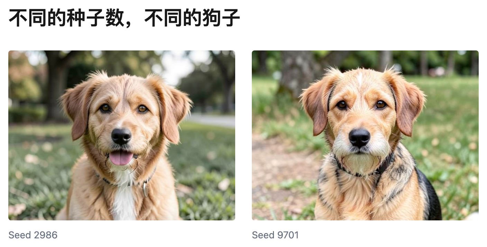
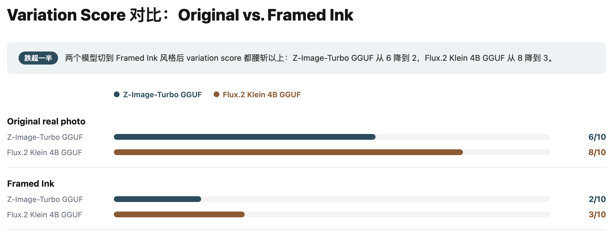
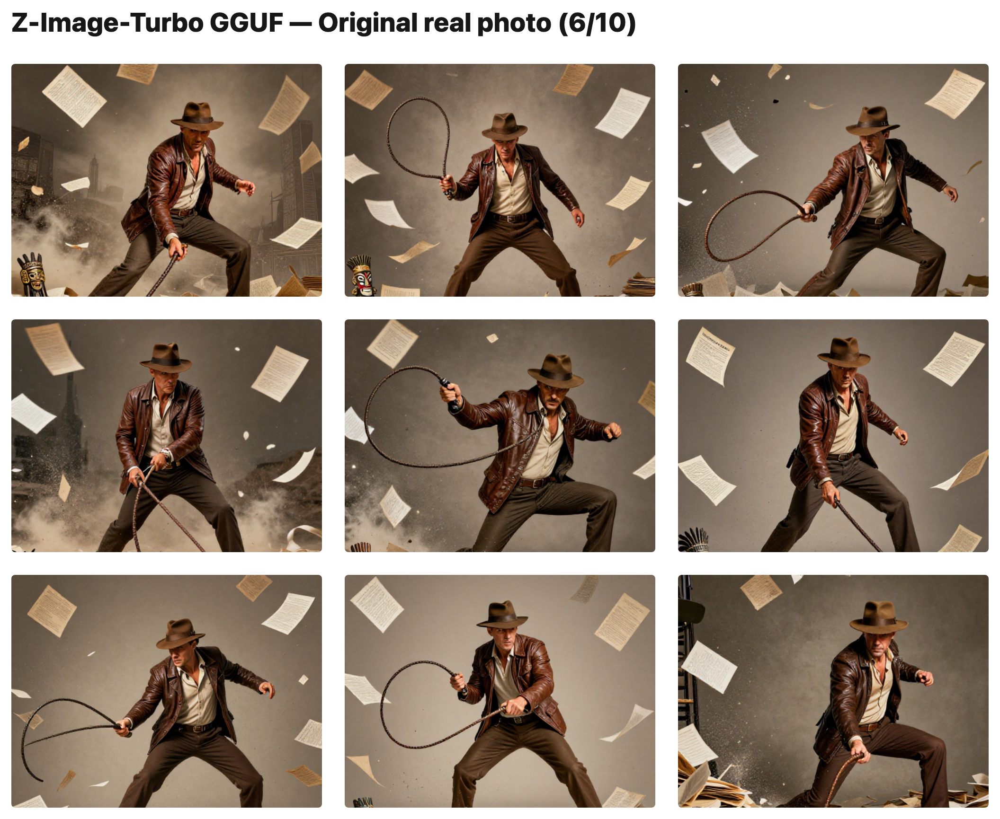
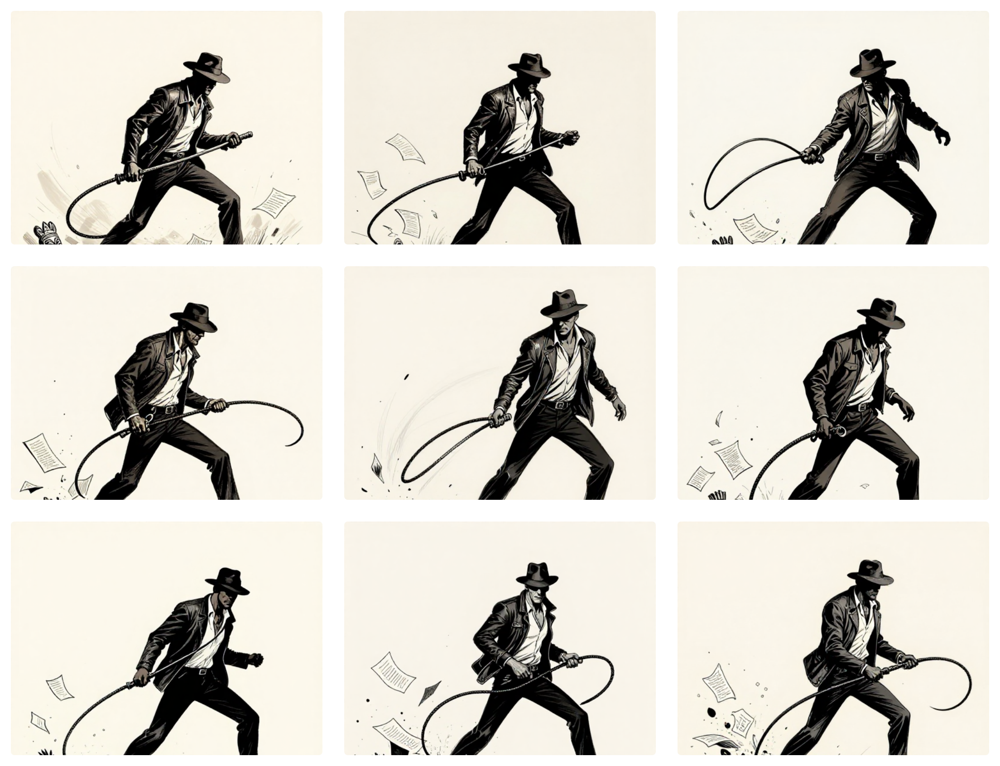
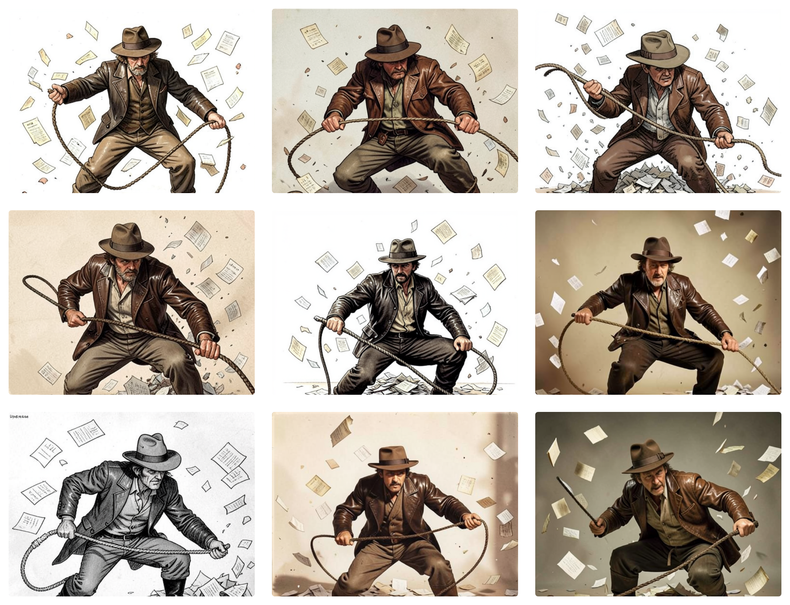
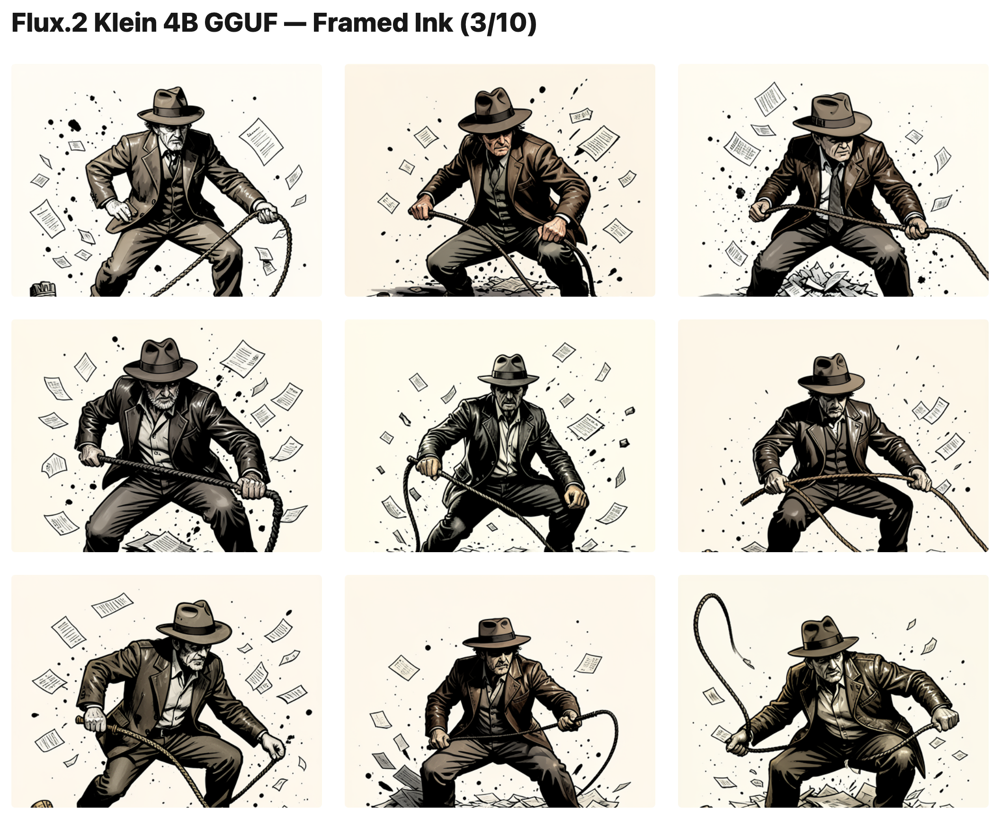

照片风格还是插画风格？
要点：插画风格直接生图变化不多。从照片风格开始，后面改风格更实际。
我想要那种黑白插画风格的图片。同时我又希望能每次生图能有稍微的变化，比如人物的姿势稍微不同。这样我可以从多张变化中选出最好的一张。
所以这次我们来测试一下不同生图风格和多样性。
我让 Z-Image-Turbo 和 Flux.2 Klein 都做了尝试。它们用同样的提示词，同样的配置，不同的种子数值来生图。最后让 Claude （Sonnet 5）看着一组图片，在多样性上打分：给一组 9 张图打一个 1-10 的多样性总分（比较姿势、镜头、纸张散落、背景这几项跨图差异，10 分代表 9 张都明显不同，1 分代表几乎是同一张的重复）。
种子是用来控制多样性的，数值不同，结果不同。比如你用 925807063139701 这个数值生成一只狗，可能得到一只。换成了345693063902986，你会得到另一只不太一样的狗。

这是得到的对比结果：

黑白插画风格（Framed Ink）在两个模型上表现一致。多样性的分数掉得很厉害。换句话说，用插画风格的提示词出来的图片，变化很少。
这是生成的图片的效果，我们可以有更直观的感觉：



注：Flux 在同样提示词下，不能很好地体现照片风格。看上面的结果，更像是彩色艺术风格，风格也不稳定。但这不影响这里的结论：我们比较的是同一风格下 9 个种子之间像不像，不是这个风格像不像真实照片，所以风格没跑准这件事可以忽略。

一起看下来，直接用插图风格生图得不到多种多样的人物构图。后面的流程要先按照片风格出图，才能在多种可能中选出一个最好的。